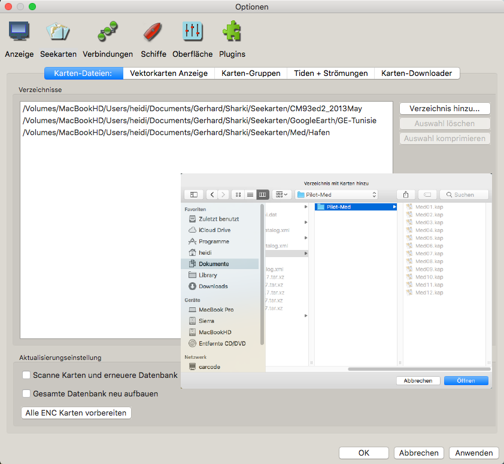

Karten Gruppen
Karten Gruppen lösen folgendes Problem: Es können viele Karten mit der aktiven Datenbank geladen sein. Einige haben einen überlappenden Bereich
im gleichen Maßstab, so daß die "Quilting"-Logik nicht weiß, welche davon geladen werden sollen. Ein anderes Beispiel wären die Pilot-Karten
als eine Gruppe und die normalen Navigationskarten als andere Gruppe, so daß schnell dazwischen gewechselt werden kann. Als letztes Beispiel in einem
anderen Fall könnten die NGA Karten in einer Gruppe, die Standard NOAA RNCs in einer anderen und britische UKHO Karten in einer dritten Gruppe sein.
Mit der Karten Gruppen Funktion können mehrere Gruppen mit unterschiedlichen Karten Verzeichnissen in jeder Gruppe definiert werden. Die zum Ansehen
gewünschte Gruppe kann schnell gewählt werden, ohne Karten zur aktiven Datenbank hinzufügen oder löschen zu müssen.

In Einstellungen/Seekarten wählen Sie "Karten-Gruppen...". Es erscheint ein Fenster mit 2 Listen. Die linke Liste enthält die installierten (aktiven) Kartenverzeichnisse. Mit der rechten Liste können Gruppen erzeugt, editiert oder gelöscht werden. Es gibt immer eine "Gruppe 0" mit allen (aktiven) Karten. Diese Gruppe ist nicht editierbar. Neu von Ihnen erzeugte Gruppen können Karten Verzeichnisse oder individuelle Karten haben, die mit ihrer Wahl aus der linken Liste hinzugefügt werden (Hinzufügen Button). Mit dem Entferne Button werden Karten Verzeichnisse oder einzelne Karten aus einer Gruppe entfernt, jedoch nicht von der aktiven Datenbank sondern nur aus der Gruppe.
Im Moment ist die Konfiguration von Karten-Gruppen in der neuen Oberfläche von OpenCPN noch fehlerhaft. Das Bild unten und die Beschreibung zeigen die alte Oberfläche.
Diese Dialogbox startet, wenn "Karten-Gruppen..." angeklickt wurde. Es sind einige Gruppen definiert.
Der Anwender verwendet die CM93v2 Karten. Für diesen Bereich möchte er die französische Karte haben:
Wählen Sie die Gruppe, die Sie aktuell verwenden möchten, mit einem Rechts-Klick im Kontextmenü auf "Kartengruppen". Beim Wechsel der Gruppen
wird versucht, einen Bereich und Maßstab anzuzeigen, der der Situation vor dem Gruppenwechsel entspricht. Verständlicherweise klappt das nicht immer.
Letztendlich benimmt sich OpenCPN wie in älteren Versionen, wenn keine Gruppen definiert wurden. Dann sind alle installierten Karten immer verfügbar.
Kartengruppen und CM93
Es ist möglich, mehrere Instanzen von CM93v2 Karten in verschiedenen Kartengruppen zu haben. Oben sind 5 Instanzen in verschiedenen Kartengruppen geladen. Die Ansicht ist "Alle aktiven Karten". Die Instanzen werden von links nach rechts in der Reihenfolge der Kartengruppen geladen. In diesem Beispiel wird nur die linke Instanz von CM93 angezeigt, die nicht vom Quilting ausgeschlossen ist. Das ist also die Instanz mit dem gelben Balken.